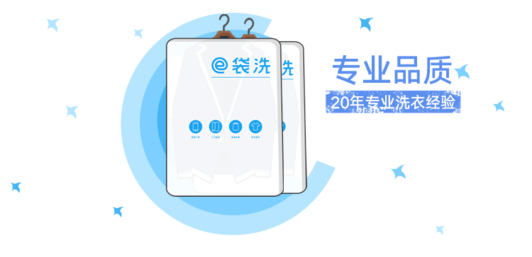

e袋洗作为中国互联网领先洗衣品牌，致力为用户提供专业、便捷、高品质的洗涤服务。
我们的品控团队有20多年的洗衣管理经验，曾经服务08北京奥运会，为您的爱衣提供最专业的洗涤品质保障。我们首创的手机预约上门取送、72小时送回、超值按袋洗衣、优质的按件清洗，致力为您的生活提供更多便利。
e袋洗团队拥有超过20年的洗衣管理经验，深知最好的洗衣加工店在哪里以及如何让他们提供最好的服务。除了基本的资质、品牌、店面面积外，e袋洗对加工商使用的设备，技师的等级水平、工作年限，店内员工数量，清洗流程等均有着严格的要求。我们给加工商制定了“123”洗衣法和质量把控的“365”标准，保证了我们的清洗品质高于市面上洗衣店的洗衣质量。
e袋洗的衣物取送工作都交给社区里有固定住所的“小e管家”。他们可能就是你家楼下的张大姐，隔壁楼的小刘。他们可能在您下单后几分钟内就能过来取衣服了。把衣服交给“小e管家”，放心、踏实，亲切！我们通过各种流程控制保障衣物的快速取送和洗涤，减少您的等待时间。
强悍的议价能力和去门店化运作帮助e袋洗为您提供最为贴心的衣物清洗价格，仅有传统洗衣店50%价格甚至更低。更有超值的“按袋计费”99元/袋，装多少件衣服都是99元。一袋可装下33件衬衫以及124条丝巾。
e袋洗深知洗衣加工行业的投诉率是不可回避的问题，面对投诉，e袋洗一直抱着积极面对、快速解决的态度去处理。为了确保用户的体验和权益，e袋洗提供了远高于行业标准的赔付政策（最高赔偿5000元）。执行“先行赔付”来提高服务满意度，即e袋洗先出钱赔付给用户，解决后再和洗衣店确认责任；“7天内解决“是确保我们在7天内给到用户满意的答复；“100%耐心服务”是对我们服务态度的要求。
希望我们的用心服务能让您的生活更美好！感谢您对e袋洗的支持。
e袋洗服务热线 400-818-7171